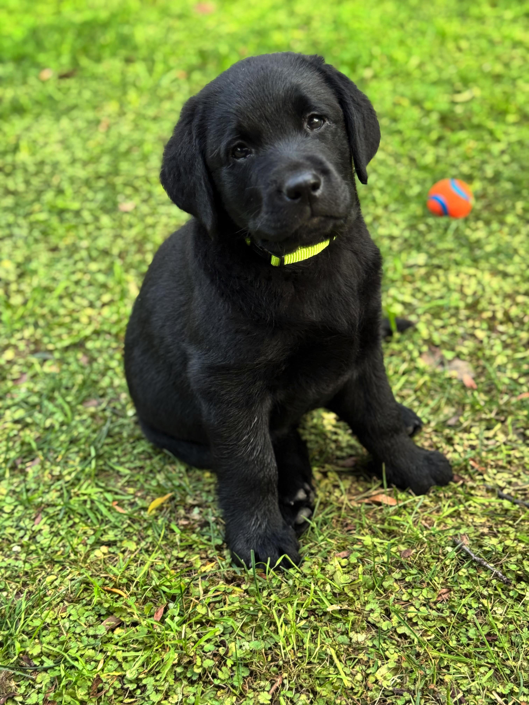
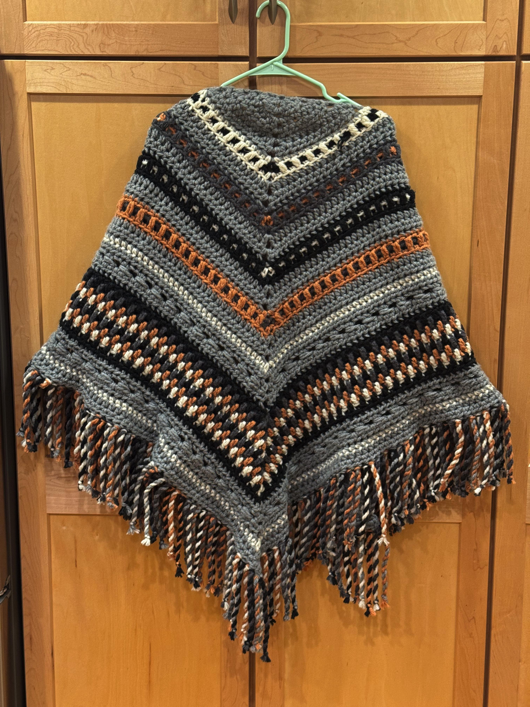
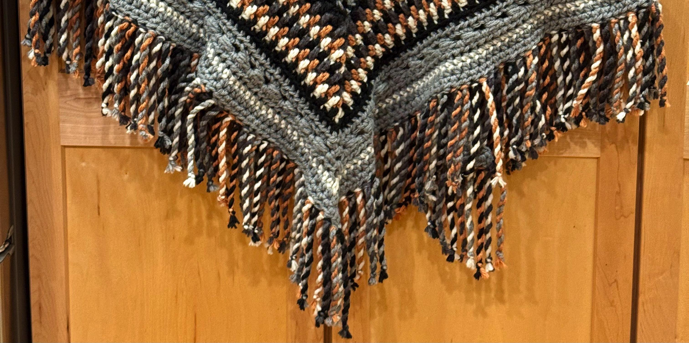

Customer Success Manager | Cultivator of Customer Relationships | Client goals are my mission
Welcome! I am an experienced Customer Success Manager with a proven track record of building and nurturing strong customer relationships within the Application Security sector. I excel at understanding client needs through attentive listening and a professional, consultative approach, ensuring their goals are achieved at every stage of the customer journey. My expertise in guiding customers through seamless onboarding and driving ongoing product adoption consistently leads to high retention rates and increased customer satisfaction.
With robust analytical and technical skills, I quickly adapt to new technologies and deliver actionable insights that help clients maximize the value of their investments. As an entrepreneur, I bring a results-oriented work ethic and thrive in collaborative, cross-functional environments. My strong networking abilities connect people and businesses for shared success, while my exceptional verbal and written communication skills foster effective collaboration and enable clear, impactful interactions.
This website highlights selected projects, skills, and professional experience.

I used AI to vibe code a web application to calculate how much to feed my lab puppy, Axel, as he grows. The feeding and weight charts are based on what was recommended by our breeder.
The program was helpful to me because it quickly shows me if Axel is on track for his weight as he grows.
Launch FeedMyLab Calculator https://lizbrockman.github.io/FeedMyLab/how-much.html

I crocheted this wrap using Lion Brand Pattern "Book Club Wrap." When it was time to make the fringe for the wrap, I used AI to generate a random pattern of yarn colors to use for the fringe.
Using AI was definitely beneficial as it was quick and provided a nice range of colors to use in the twisted fringe.
Explain what you learned and the impact of the project.
I used AI to vibe code a web application to calculate how much to feed my lab puppy, Axel, as he grows. The feeding and weight charts are based on what was recommended by our breeder.
The program was helpful to me because it quickly shows me if Axel is on track for his weight as he grows.
Launch FeedMyLab CalculatorI crocheted this wrap using Lion Brand Pattern "Book Club Wrap." When it was time to make the fringe for the wrap, I used AI to generate a random pattern of yarn colors to use for the fringe.
Using AI was definitely beneficial as it was quick and provided a nice range of colors to use in the twisted fringe.
Explain what you learned and the impact of the project.
Email: liz.brockman@comcast.net
LinkedIn: linkedin.com/in/lizbrockman
GitHub: github.com/lizbrockman